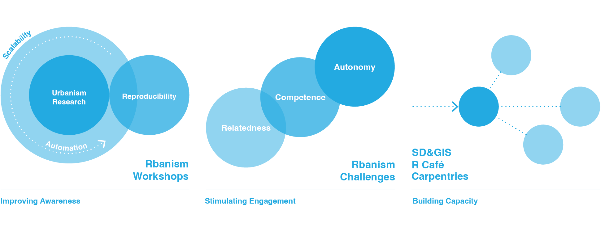

Rbanism: Empowering the urbanism research community to use research software effectively and with confidence

The Rbanism community aims to empower urbanism researchers, students, educators and practitioners to use open-source software and related open-science practices effectively and with confidence. It raises awareness, stimulates engagement and builds capacity by demonstrating the benefits of reproducibility, automation and scalability for urbanism research, education and practice. The community is initiated by a group of R users in the Department of Urbanism at TU Delft, and it has the ambition to scale up to a larger national and international Rbanism community.
Join the communtiy
Sign up to join the Rbanism community and stay up to date with our events, activities and resources.
Please note that we expect all members of the community to follow our Code of Conduct.
Events

Wrap-up Event
A celebratory closing to our first series of events.

Challenge
Find out how reproducible your research is.

Urbanism ReproHack
Attempt to reproduce a published paper.